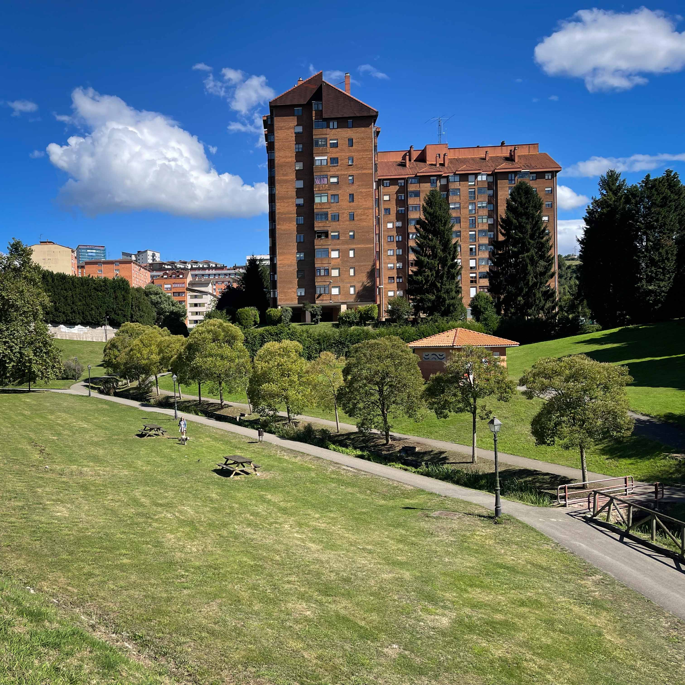

Vistas a la Sierra del Aramo.
.png) Parque de Invierno
Parque de Invierno
El parque al sur de la ciudad con 171.368 metros cuadrados
En él podrás practicar varios deportes / Disfrutar de la naturaleza / Realizar rutas de senderismo.
Un lugar para pasar un día agradable.

.png)
El Ayuntamiento de Oviedo amplió el Parque de Invierno incorporando varias parcelas. Estas incluyen diez fincas de la zona de Campiello, siete de permutas anteriores y una parcela donde está la boca oeste del túnel del ferrocarril Vasco-Asturiano, sumando un total de 40.224 metros cuadrados.

.png) FUSO DE LA REINA
FUSO DE LA REINA
Con la ampliación del Parque, se han creado tres áreas distintas: la zona del túnel, la zona de la casona y la zona boscosa. El parque cuenta con una red de caminos que respetan el arbolado existente y una zona de descanso en los claros. Es un lugar ideal para pasear, disfrutar de las vistas y participar en diversas actividades. Además, conecta directamente con la senda peatonal Fuso de la Reina.
 OTRAS RUTAS CON HISTORIA
OTRAS RUTAS CON HISTORIA
Las Caldas es una Villa Termal accesible desde Fuso de la Reina y la Senda Verde. En 1776, se construyó un balneario para aprovechar las aguas termales, al que se añadieron más tarde otro edificio y una galería de hierro y cristal. Cerrado en 2004, el complejo reabrió con fondos mineros, incluyendo dos hoteles de 5 y 4 estrellas.
Detrás del Balneario está la pequeña iglesia de San Juan de Priorio, de estilo románico. Y si iniciamos el camino hacia Priorio nos encontramos las cuevas prehistóricas de La Lluera I con grabados de animales en las paredes y La Luera II con dibujos geométricos.

.png)
Hasta el año 2022 los fuegos artificiales de las fiestas de San Mateo se celebraban en este parque por ser un lugar idóneo para ello.
.png) Hace 33 años.
Hace 33 años.Construido en el año 1991 el parque es mantenido y operado por el Ayuntamiento de Oviedo.
.png)
Sobre Nosotros
Somos un equipo apasionado de desarrolladores y diseñadores Web.
Nuestra misión es
transformar la experiencia de visitar los parques por
excelencia de la ciudad de oviedo en realidades digitales que sean visualmente atractivas,
intuitivas y fáciles de ver.
© 2024 Parque de Invierno. Todos lo derechos reservados